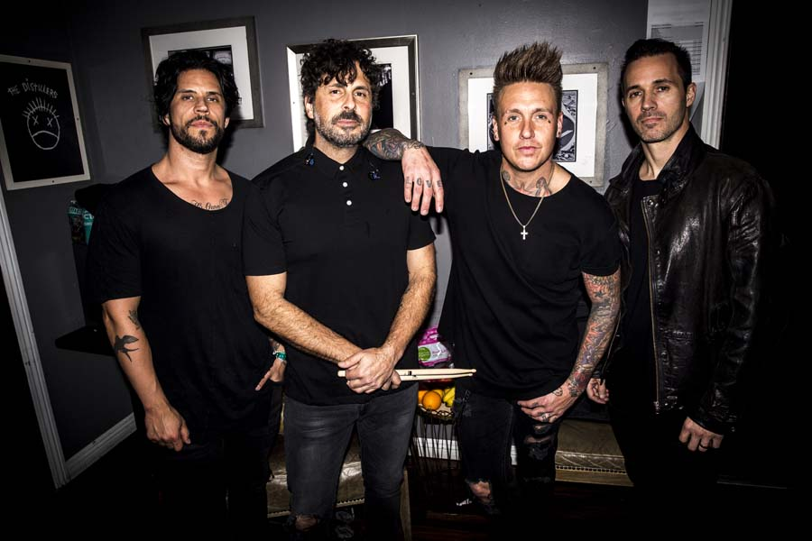
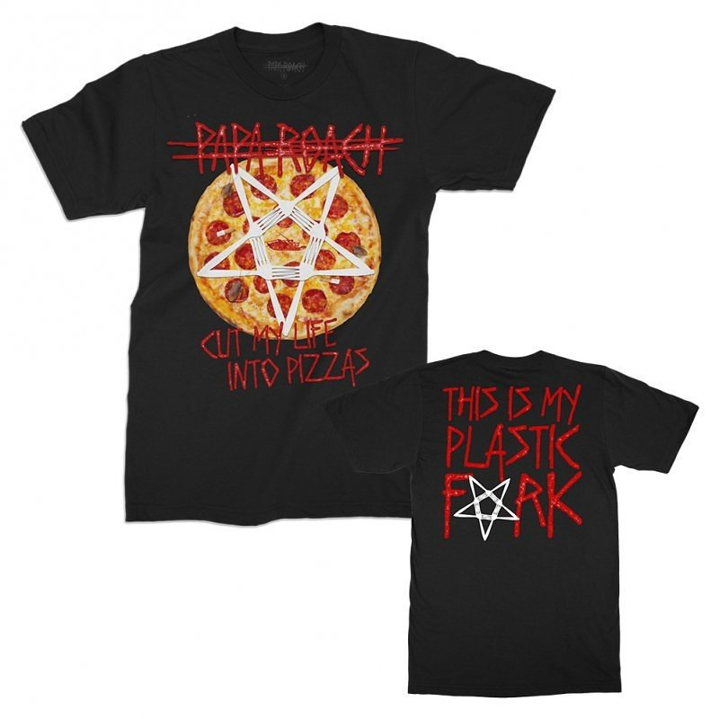
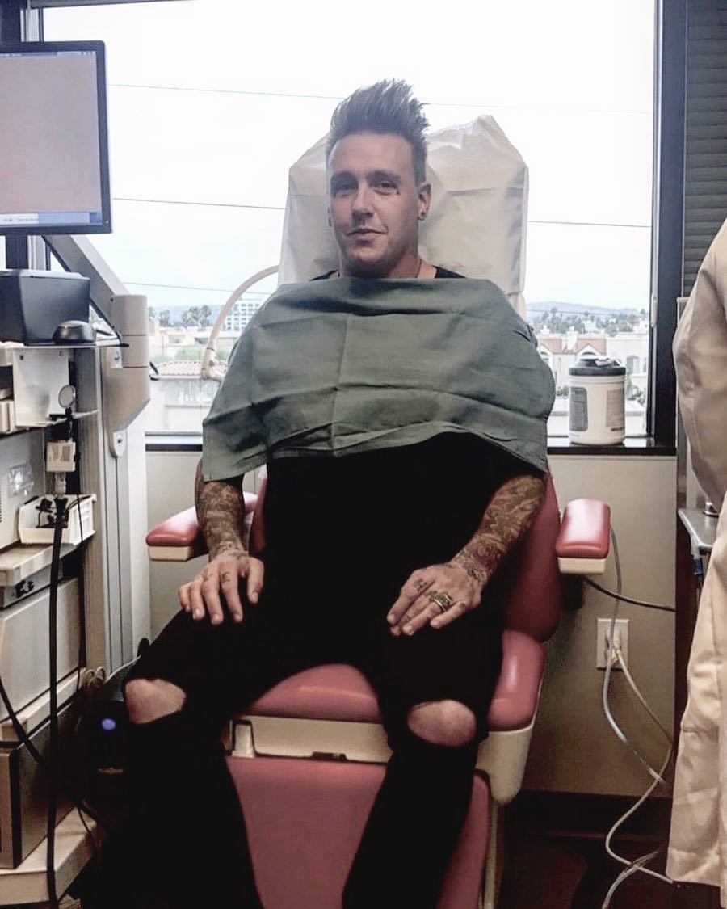

- 
- 
- 
-Papa Roach зарекомендовали себя как достаточно частые гости в России, поэтому практически ни у кого не оставалось сомнений, что и новый альбом Who Do You Trust? они тоже довезут до нас.
Не нарушая традиции посещений страны раз в два года, Джейкоби Шэддикс и компания сыграют в московском Adrenaline Stadium 2 июня, а в Северной столице отметятся неделю спустя – 9 июня – и сыграют в клубе А2.
В этом году в российский тур также вошли шоу в Самаре (6 июня) и Екатеринбурге (4 июня).
На предстоящих концертах российской публике представится возможность вживую услышать свежий материал команды и, конечно же, старые хиты.
У поклонников уже было достаточно времени расслушать и заслушать Who Do You Trust? и составить о нем собственное мнение.
Сами музыканты же утверждают, что это творение – то, о чем группа давно мечтала в творческом плане.
В целом послужной список Papa Roach весьма велик и включает в себя две номинации на Грэмми, совместные туры с именитыми рокерами, Last Resort, ставшую настоящим ню-метал гимном, а также многое-многое другое.
Даже если вы уже бывали на концертах Papa Roach, увидеть их еще раз – не самая плохая идея. Ведь, что ни говори, в одном можно точно быть уверенными – вы точно не будете разочарованы.
-Американская группа Papa Roach выпустила официальный мерч, вдохновленный вирусной картинкой с изображением ларька с пиццей.
На фото изображена отфотошопленная надпись Cut My Life in 2 Pizzas, отсылающая к строчке Cut my life into pieces из хита Papa Roach Last Resort. Музыканты оценили каламбур, и выпустили мерч со стилизованной надписью, добавив для созвучия еще одну фразу – This is my plastic fork.
Поклонники, оценившие чувство юмора музыкантов, могут приобрести забавный мерч здесь.
Кроме того, Papa Roach анонсировали масштабный североамериканский тур в поддержку своего девятого студийного альбома Crooked Teeth совместно с группами Nothing More и Escape The Fate.
-Papa Roach объявили о том, что придется отменить несколько концертов в связи с тем, что Джекоби Шэддиксу необходима операция на голосовые связки.
Голосовые связки — это мышцы, и, следовательно, могут травмироваться — примерно так объясняет группа в Instagram. Вероятно, это вновь какие-то новообразования, или узлы, на связках. Требуется операция и время для восстановления. Диагноз установлен своевременно, трудностей быть не должно.
Кроме того, в Instagram упоминается то, что подобную операцию уже делали Шеддиксу примерно пять лет назад. Всё прошло успешно.
Также Papa Roach благодарят поклонников за понимание к сложившейся ситуации, обещают вернуть затраты на билеты.
Итак, отменены следующие концертные даты: 11 августа 2017 года — в Розберг, штат Орегон, на Выставке Douglas County Fair; 19 августа — в Картервилле, штат Иллинойс, на фестивале Moonstock 2017 и 25 августа — в Палмере, на Государственной Ярмарке Аляски.